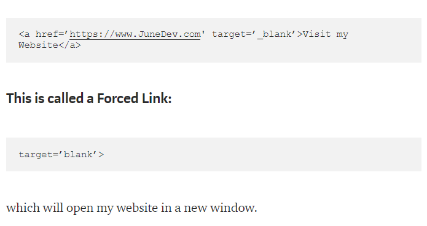

Navigation & Linkers
Navigation Bar & Table Structures
Important details to know before including more content on your basic html Webpage.
Quick Summary
- Create anchored tags, ordered/ unordered lists, understand 'nav' tags, understand target=’_blank’ in anchor tag.
- Learn about headings, rows, and cells in a table on Html docs for displaying data.
Requirements
- Know HTML layout & format
- Understand content layout in header, footer, and nav tags.
Introduction
Creating links is a fundamental part of web development. Other words for anchor tags 'a' are links and hyperlinks. Two different types of lists are 'ul' un-ordered lists and 'ol' ordered lists.
Multiple Steps Explained..
We use the 'nav' tag to for major blocks of navigation links created to navigate through the site. The following tag 'a href= '#foo’' foo '/a' will link to something that is on the same page with the id attribute of ‘foo’ that when clicked on the page will scroll down to the ‘foo’ section.
Important to know that target=’_blank’ is used to open website in a new tab. The href= declares where the browser navigates to when the link is selected.
Tabula Rasa
Table headings are the 'thead' declaration depicts the labels. Table rows 'tr' declare the beginning of each row. Table cells, 'th' or 'td', are segments of each row that make up the whole table. Table cells depict different data in each row.
Tips
Tables are very ineffective for website layouts so please limit your table coding to displaying data. For columns and format I recommend flexbox! It’s a useful tool to efficiently outline website.
Summary
When using DOM (Document Object Model) query the basic understanding of lists items will come more in handy rather than knowing lists for the sake of web content managing. When learning CSS and JavaScript calling the #ids of your lists items are significant to functionality and development of web page design. Understanding tables solidifies differentiation on how to outline and display data. Remember, it is not suggested to use tables when structuring the layout of the webpage as a whole. Stay tuned for articles on flexbox, bootstrap, and foundation which enhance the way we develop and design our webpages. Happy coding!